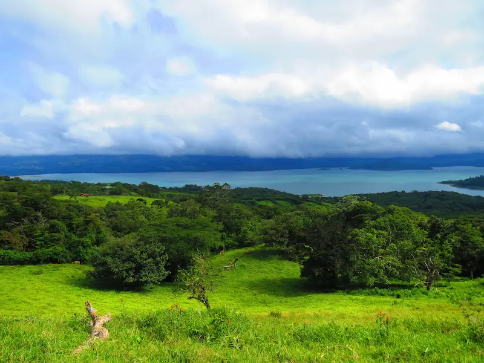
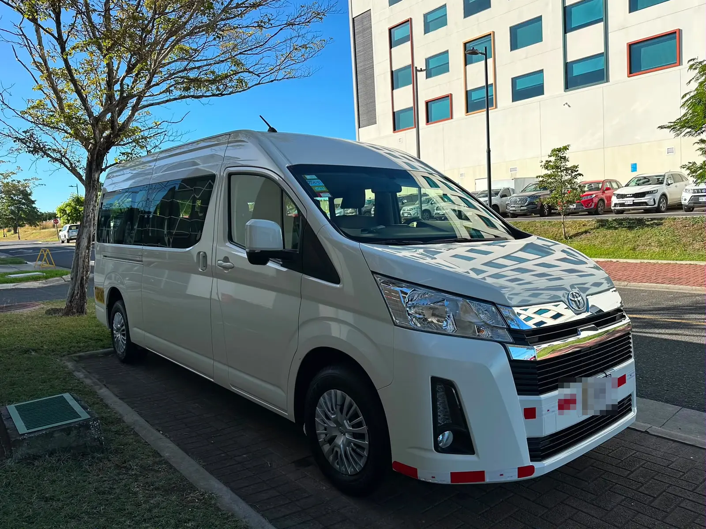

Why visit La Fortuna & Arenal?
La Fortuna and the Arenal region offer one of Costa Rica's most complete nature experiences. The iconic Arenal Volcano rises over the surrounding rainforest, and the region combines wildlife-rich trails, hanging bridges, volcanic hot springs and one of the country's most impressive waterfalls.
While the drive from Liberia Airport is approximately three hours, the concentration of experiences in La Fortuna makes it an excellent multi-night destination or a rewarding extension to a Guanacaste beach stay.
What travelers usually like
- Iconic Arenal Volcano scenery and volcanic hot springs
- Hanging bridges through primary rainforest canopy
- Year-round destination with diverse wildlife
- La Fortuna Waterfall, one of Costa Rica's most beautiful
- Excellent for multi-day itineraries and nature photography
- Wide range of adventure and relaxation experiences
Things to consider
- Approximately 3 hours from Liberia Airport, best enjoyed as a multi-night stay
- The volcano summit is often covered in cloud, especially in the afternoon
- The rainy season brings heavier rainfall than the Pacific coast
Frequently asked questions
How do I get from Guanacaste to La Fortuna?
The most comfortable option is a private transfer, which takes approximately 3 hours from Liberia Airport. This allows you to stop along the way and arrive relaxed.
Is La Fortuna worth visiting from Guanacaste?
Yes, especially if your trip is longer than 5 days. La Fortuna's concentration of experiences (volcano, hot springs, hanging bridges, wildlife) makes it a natural complement to a beach stay.
What are the must-do activities in La Fortuna?
The Arenal hanging bridges, volcanic hot springs and La Fortuna Waterfall are the top three. For wildlife, an early morning walk through primary forest is highly recommended.
Can I see the volcano from La Fortuna?
Yes, on clear days, typically early morning before clouds form. Evenings at hot spring facilities that face the volcano can also offer excellent views.
Travel Score
Hanging bridges, rainforest walks, waterfalls and a wide range of adventure experiences are highlighted.
Listed as best for Families with diverse, accessible nature experiences.
Volcanic hot springs and relaxation experiences suggest some upscale offerings but no explicit private mention.
The list includes MARY's BBQ Lounge & Grill but otherwise shows mostly restaurants, not dedicated nightlife.
A long list of highly-rated eateries like Tica Grill (5/5) and Harmony Food Restaurant (5/5).
An inland rainforest and volcano destination, only mentioned as an extension to a Guanacaste beach stay.
Year-round destination with wildlife-rich trails and diverse wildlife observation.
Volcanic hot springs and a wide range of relaxation experiences are highlighted.
Getting to La Fortuna & Arenal
Featured experiences

Arenal Hanging Bridges Mistico
Private full-day Arenal Hanging Bridges experience at Mistico Park — canopy-level suspension bridges from 5 to 100 metres, La Fortuna Waterfall and optional hot springs. Breakfast and lunch included. Bilingual guide.
View Experience →
Rainforest & Hot Springs Arenal
Private full-day Arenal experience — Bogarin Trail wildlife hike, La Fortuna Waterfall or Arenal National Park, thermal hot springs, breakfast and lunch included. Arenal Volcano and Central America's largest man-made lake.
View Experience →
Costa Rica Highlights Tour — Sloths, Waterfall, Coffee, Hot Springs & Hanging Bridges
The ultimate one-day Costa Rica experience — sloth observation, waterfall, hands-on coffee and cacao workshop, natural mineral hot springs and two hanging bridges. Everything that makes Costa Rica extraordinary, in one private day.
View Experience →Where to Stay in La Fortuna & Arenal
La Fortuna & Arenal covers several distinct areas, each with its own hotels and character. Here's where our guests actually stay:

Where to Eat
Sourced live from Google -- ratings and details may change.
Harmony Food Restaurant
Provincia de Alajuela, La Fortuna, Barrio Pilo, Costa Rica
Soda Stereo La Fortuna
Alajuela Province, La Fortuna, Costa Rica
Tica Grill Authentic Costa Rican Kitchen, La Fortuna
Av. 327 1 block south and 1/2 block west of Alamo Car Rental La Fortuna, Arenal Volcano, de, Provincia de Alajuela, La Fortuna, 21007, Costa Rica
RESTAURANTE VIKINGOS
21007 Alajuela, Provincia de Alajuela, La Fortuna, Barrio Pilo, 21007, Costa Rica
Acacia Restaurante
Barrio Pastoral, Hotel Arenal Xilopalo, Provincia de Alajuela, La Fortuna, 21007, Costa Rica
MARY’S BBQ • La Fortuna Lounge & Grill
506 Alajuela, Provincia de Alajuela, La Fortuna, 21007, Costa Rica
Restaurant Raul Castaño Fortuna Downtown
Frente a Spectacolar Cantina, F9C2+9Q, Provincia de Alajuela, La Fortuna, 21007, Costa Rica
Restaurante La Naciente
2, kilometros oeste de la Iglesia, Provincia de Alajuela, La Fortuna, 21007, Costa Rica
Wildlife You May See
Resplendent Quetzal
One of the most elusive and beautiful birds in Costa Rica; endangered.
Source: Wikipedia: Arenal Volcano National ParkWhite-faced Capuchin Monkey
Commonly seen within the park.
Source: Wikipedia: Arenal Volcano National ParkJaguar
Present in the park, though rarely seen.
Source: Wikipedia: Arenal Volcano National ParkCoati
Commonly seen along park trails.
Source: Wikipedia: Arenal Volcano National ParkTravel insights

Costa Rica in September: Will Rain Ruin Your Tours?
September rain rarely cancels tours in Guanacaste and Arenal. Here's how the green season actually works and how to plan around it.
Read Article →
Arenal Hanging Bridges and a Waterfall in One Day?
Yes, you can comfortably combine Arenal's hanging bridges with a waterfall in a single day near La Fortuna, and here's how to pace it right.
Read Article →
Green Season Packing List: Guanacaste & Arenal
A practical, locally-informed packing guide for Costa Rica's Green Season, separating beach, rainforest, and transfer-day essentials for Guanacaste and Arenal.
Read Article →
Should Kids Bring Life Jackets to Costa Rica?
Traveling to La Fortuna and Riu Guanacaste with young children? Here is when strong swimmers still benefit from bringing properly fitted life jackets.
Read Article →
Liberia Airport to Arenal & Papagayo: Drive Times & Stops
A practical guide to connecting Liberia Airport, Amor Arenal, and the Waldorf Astoria Papagayo, with drive times, worthwhile stops, activities near Arenal, and honest advice about September's green-season rain.
Read Article →
Best Sloth Tours From Papagayo: A Local Comparison
Wondering which sloth tour is worth the trip from Papagayo? Here's an honest local comparison of drive times, walking difficulty and what each experience actually offers.
Read Article →
How to Find Small-Group Volcano and Rainforest Tours in Costa Rica
Looking for a more personal Costa Rica adventure? Learn how to choose local guides, smaller tour groups and authentic volcano and rainforest experiences.
Read Article →
Can You Bring a Phone on Costa Rica Adventure Tours?
Wondering where to keep your phone, towels and valuables during Costa Rica adventure tours? Here is what to expect on rafting, ziplining, ATV and catamaran excursions.
Read Article →
La Fortuna to Playa Flamingo Without the Monkey Trail
Driving from La Fortuna to Playa Flamingo? Learn how to avoid Route 911, choose the paved route through Guanacaste and decide between driving or hiring a private transfer.
Read Article →
La Fortuna Without a Rental Car: An Honest Trip Recap
A traveler’s La Fortuna recap shows how to enjoy the region without a rental car, combining a domestic flight, boutique lodging, wildlife, local food and hot springs.
Read Article →
How Many Days Do You Need in La Fortuna? 2, 3 or 4 Nights Explained
There is no single right number of nights for La Fortuna. Compare 2, 3, 4 and 5+ nights, understand why nights aren't the same as full days, and see how arrival and departure timing changes the real answer.
Read Article →
Costa Rica Without a Car: How to Plan Your Trip
Traveling Costa Rica without a rental car is practical on many routes. Compare transport options, plan realistic transfers, and decide what fits your trip.
Read Article →
SJO to La Fortuna: Continue Today or Stay Overnight?
Landing at SJO in the afternoon or evening? Here's how to decide whether to continue to La Fortuna the same day or stay near the airport and travel the next morning.
Read Article →Nearby destinations


Plan your La Fortuna & Arenal experience with a local expert.
Private transportation, personalized tours and practical advice in one conversation.